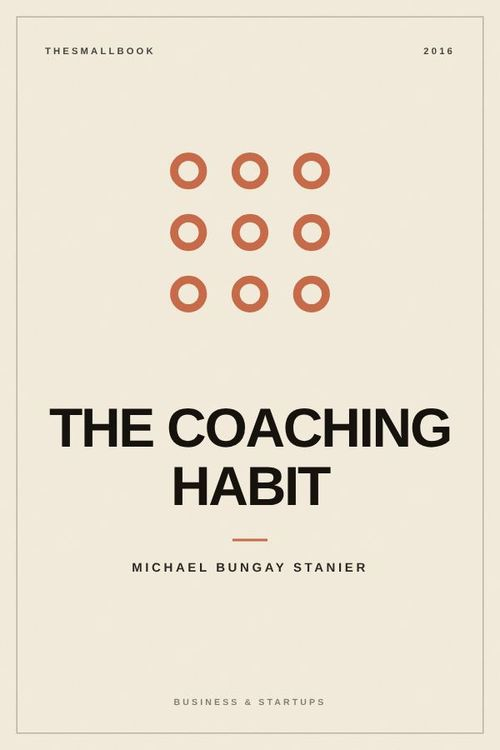

Library › Authors › Michael Bungay Stanier
Books by Michael Bungay Stanier
Michael Bungay Stanier has one book in the library. Every book here is read down to the big idea, the lessons, the lines worth keeping and the actions worth taking. Start with the summary, then buy the full book if it earns a place on your shelf.

The Coaching Habit
2016 · 9 min · 7 lessons
Stop giving answers. Ask seven questions - and watch people solve their own problems.
Michael Bungay Stanier's insight: leaders fall into the 'advice monster' - giving answers, fixing problems, creating dependence. The cure is seven questions that turn any conversation into coaching: the Kickstart ('What's on your mind?'), the AWE question ('And what else?'), the Focus ('What's the real challenge here for you?'), the Foundation ('What do you want?'), the Lazy ('How can I help?'), the Strategic ('If you're saying no, what are you saying yes to?'), and the Learning ('What was most useful for you?')....
Lessons in the summary
- Tame the Advice Monster
- The Kickstart: 'What's on your mind?'
- The AWE Question: 'And what else?'
- The Focus Question: 'What's the real challenge here?'
- The Lazy Question: 'How can I help?'
- The Strategic Question: 'What are you saying yes to?'
- The Learning Question: 'What was most useful?'
Lines worth keeping
- The advice monster is the leader's default - and it kills learning.
- 'And what else?' is the best coaching question in the world.
- Asking questions creates a moment of choice - it's the difference between training and coaching.
Questions Michael Bungay Stanier helps answer
Read nearby authors next
- Devdutt Pattanaik 5 books
- Rashmi Bansal 5 books
- Robin Sharma 5 books
- Chetan Bhagat 4 books
- Seth Godin 4 books
- Alex Hormozi 3 books
- Gurcharan Das 3 books
- Nir Eyal 3 books